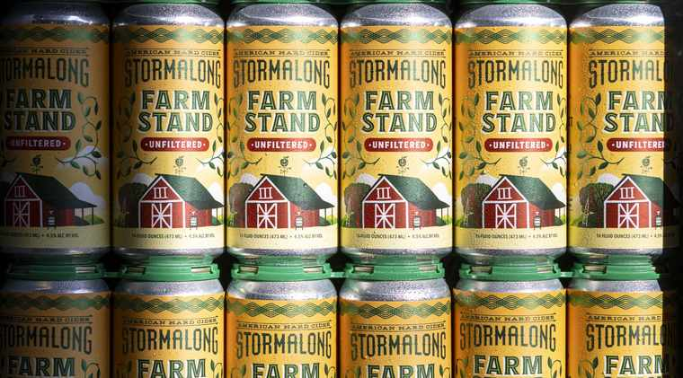

THE APPLE.
At Stormalong, we’re committed to quality and taste. Since our founding, we have always set out to make delicious cider with the highest quality, whole ingredients we can find.
All of our ciders are made with 100% real, whole, carefully sourced local apples which are freshly pressed and fermented with care. We never use concentrates, artificial ingredients, or chemically concocted ‘natural’ flavors and our ciders are all naturally gluten-free.
We don’t cut corners. We respect the apple, the ingredients, and the process.

THE RIGHT APPLES.
Stormalong Cider was founded in 2014 by Shannon Edgar with the desire to showcase the virtues of cider made with the right apples. Cider is a complex and nuanced beverage, and apple selection and blends are paramount.
We treat cider making as an artistic endeavor, a renaissance of sorts. Using a blend of culinary and rare heirloom varieties, we ferment and age our ciders with traditional and modern techniques showcasing the unique characteristics of these diverse apples.
LARGEST REFINED CIDER MILL
IN THE WORLD, 1880 TO 1930.
In the late 1800’s, the largest refined cider mill in the world was located in Sherborn, MA, exporting a “champagne cider” to England, and other places abroad. Around that time there were some 40 orchards in the town and the owner of the cider mill, Jonathan Holbrook, convinced the Framingham & Mansfield railroad to align their track through Sherborn with his cider mill. The first freight train into the town was loaded with apples headed to Holbrook’s mill.
With such a rich history of cider making in the Northeast, it is hard to fathom how this tradition has virtually disappeared. At Stormalong, we are both fascinated and inspired by this robust hard cider lineage, and with the legacy of cider here in Sherborn, MA, it felt like an ideal place to help reignite this tradition.

THE “PAUL BUNYAN”
OF THE SEA.
In a semi-forgotten slice of history, we were inspired by the tall-tale of Captain Alfred Bulltop Stormalong, described as a larger-than-life figure, epically tall, originating out of New England and heralded as the greatest deep-water sailor to have ever lived.
The giant “Stormy” was innovative, excelled at his craft and broke down barriers. Literally. He was said to have drilled the course of the Panama Canal. Like Captain Stormalong, we are always pushing the boundaries, learning, growing, and furthering our craft. We hope you’ll join us and make it a celebration.
Unfiltered. 100% fresh pressed apples. That’s it. Made in Sherborn, Massachusetts since 2014.
New releases and where to find them.